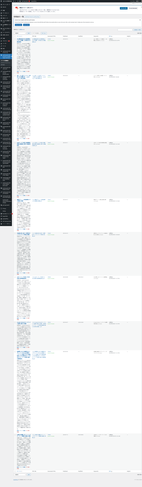
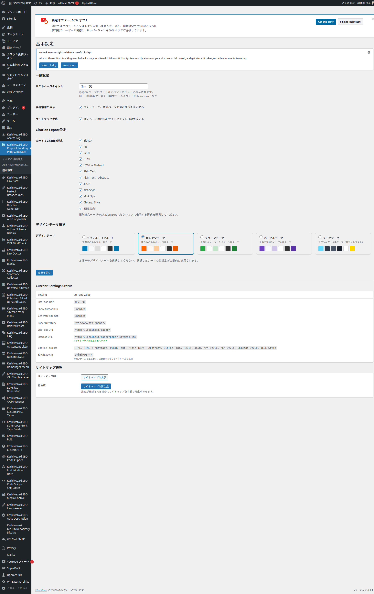

インストール・初期設定
プラグインのインストールから初期設定まで、ステップバイステップで解説します。
インストール手順
1
プラグインファイルを /wp-content/plugins/kashiwazaki-seo-preprint-landing-page-generator/ にアップロードします。
2
WordPress管理画面の「プラグイン」メニューから有効化します。
3
左メニューに「Preprint Landing Page」が追加されます（dashicons-media-documentアイコン、「固定ページ」の下に表示）。
有効化すると自動的にリライトルールが設定され、/paper/ 配下のURLが動的に処理されます。物理的なディレクトリやファイルは一切作成されません。
管理画面の構成

投稿一覧では、各論文のPDF URL、生成状態、キーワード、公開日、更新日がカラムで確認できます。
基本設定

| 設定項目 | 説明 | デフォルト値 |
|---|---|---|
| リストページタイトル | /paper/ ページのタイトル | 投稿論文一覧 |
| 著者情報の表示 | 論文ページに著者情報ボックスを表示 | 有効 |
| サイトマップ生成 | 論文ページ用XMLサイトマップを自動生成 | 有効 |
Citation Export設定
個別論文ページのCitation Exportセクションに表示する引用形式を選択できます。
| 形式名 | カテゴリ | 用途 |
|---|---|---|
| BibTeX | 書誌ツール | LaTeX/Overleaf |
| RIS | 書誌ツール | EndNote/Mendeley/Zotero |
| ReDIF | 書誌ツール | RePEc（経済学） |
| JSON | 書誌ツール | カスタムツール |
| HTML | Web形式 | 基本引用 |
| HTML + Abstract | Web形式 | 引用＋要約 |
| Plain Text | Web形式 | 基本テキスト |
| Plain Text + Abstract | Web形式 | テキスト＋要約 |
| APA Style | 引用スタイル | 心理学・社会科学 |
| MLA Style | 引用スタイル | 人文科学 |
| Chicago Style | 引用スタイル | 歴史学・出版 |
| IEEE Style | 引用スタイル | 工学・情報科学 |
デザインテーマ
5種類のカラーテーマから選択可能です。論文ランディングページの外観をサイトに合わせてカスタマイズできます。
| テーマ名 | 説明 |
|---|---|
| デフォルト（ブルー） | 標準のブルー系カラースキーム |
| オレンジ | オレンジ系のアクセントカラー |
| グリーン | グリーン系のアクセントカラー |
| パープル | パープル系のアクセントカラー |
| ダーク | ダークモード対応カラースキーム |